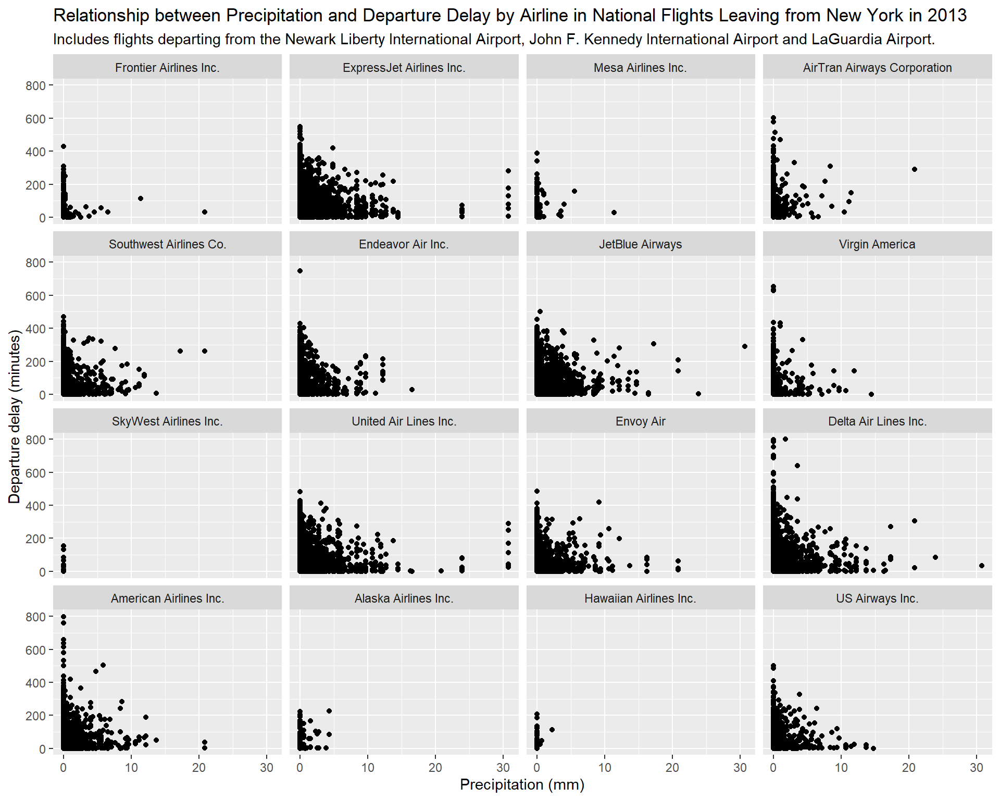
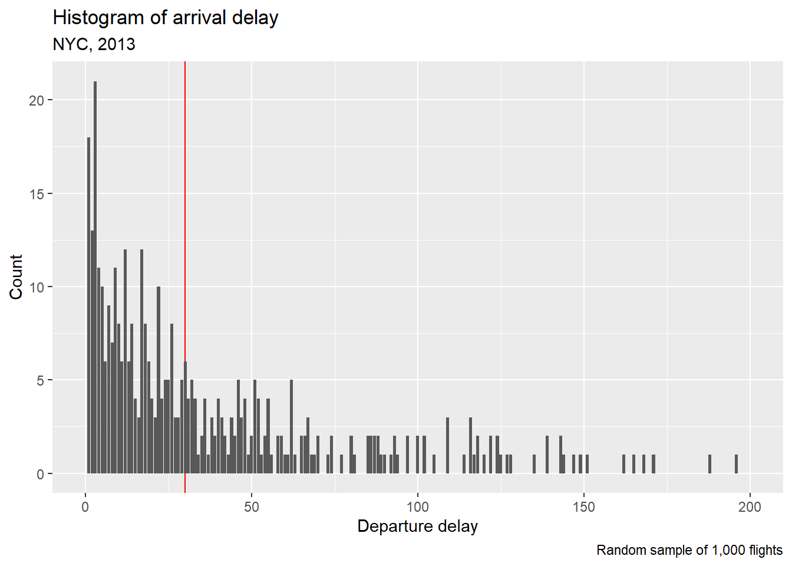

Loading required package: car
Loading required package: carData
Attaching package: 'car'
The following object is masked from 'package:dplyr':
recode
The following object is masked from 'package:purrr':
some
For our project, we will be using the NYC flights data from 2013
Part 1
We will be using flight data from nycflight13
Question to investigate:
Which airlines were the most delayed on average in 2013? And is there a relationship between delays and weather by airlines?
1. If it’s already a SQL database, read into R using the DBI and RSQLite packages. If it’s not already a SQL database, create a new SQL database and use the dbWriteTable() function to add at minimum three tables to the SQL database.
nyc_flights <- flightsnyc_airlines <- airlinesnyc_weather <- weather# Create a connection to an SQLite databasecon <-dbConnect(RSQLite::SQLite(), "nycflights13.db")dbWriteTable(con, "nyc_flights", nyc_flights, overwrite =TRUE)dbWriteTable(con, "nyc_airlines", nyc_airlines, overwrite =TRUE)dbWriteTable(con, "nyc_weather", weather, overwrite =TRUE)dbListTables(con) #all three tables are there
[1] "nyc_airlines" "nyc_flights" "nyc_weather"
2. Write three SQL queries using dbGetQuery() to explore and summarize the data. You must use at least five different SQL functions (e.g. SELECT, GROUP BY, DISTINCT, SUM, etc).
#number of flights by origindbGetQuery(con, "SELECT origin, COUNT(*) AS num_flights FROM nyc_flights GROUP BY origin")
#This data set includes departures from Newark Liberty International Airport, John F. Kennedy International Airport and LaGuardia Airport.#DelaydbGetQuery(con, "SELECT AVG(dep_delay) FROM nyc_flights")
AVG(dep_delay)
1 12.63907
#delay by airlinedbGetQuery(con, "SELECT carrier, AVG(dep_delay) FROM nyc_flights GROUP BY carrier ORDER BY AVG(dep_delay) DESC")
carrier AVG(dep_delay)
1 F9 20.215543
2 EV 19.955390
3 YV 18.996330
4 FL 18.726075
5 WN 17.711744
6 9E 16.725769
7 B6 13.022522
8 VX 12.869421
9 OO 12.586207
10 UA 12.106073
11 MQ 10.552041
12 DL 9.264505
13 AA 8.586016
14 AS 5.804775
15 HA 4.900585
16 US 3.782418
#weather: precipitation and visibilitydbGetQuery(con, "SELECT visib, AVG(visib), MIN(visib), MAX(visib) FROM nyc_weather")
3. Write two SQL queries to create new features from existing data.
#Change precipitation and visibility into the international standard#Precipitation from inches to mmdbExecute(con, "ALTER TABLE nyc_weather ADD COLUMN precip_mm NUMERIC")
[1] 0
dbExecute(con, "UPDATE nyc_weather SET precip_mm = precip * 25.4")
[1] 26115
#Visibility from miles to kmdbExecute(con, "ALTER TABLE nyc_weather ADD COLUMN visib_km NUMERIC")
[1] 0
dbExecute(con, "UPDATE nyc_weather SET visib_km = visib * 1.60934")
#Merge the name of the airlines, precipitation and visibilitydbGetQuery(con, "SELECT COUNT(*) FROM nyc_flights")
COUNT(*)
1 336776
merged <-dbGetQuery(con, " SELECT f.*, w.precip_mm, w.visib_km FROM nyc_flights AS f INNER JOIN nyc_weather AS w ON f.time_hour = w.time_hour")nrow(merged) #we have more rows than expected so we need to check why
[1] 1005694
time <-dbGetQuery(con, "SELECT time_hour, COUNT(*) FROM nyc_weather GROUP BY time_hour HAVING COUNT(*) > 1 ORDER BY COUNT(*) ASC") head(time, 20)
#most of them have a count of 3 and this is because of the 3 different origins. So we need to update our dataset. Some of them only have two which means that they don't have weather data on some airportsmerged <-dbGetQuery(con, " SELECT f.*, w.precip_mm, w.visib_km FROM nyc_flights AS f INNER JOIN nyc_weather AS w ON f.time_hour = w.time_hour AND f.origin = w.origin")nrow(merged) #it seems that some flights were not matched, as the observations decreased from 336776 to 335220
4. Visualize your data by creating a plot with ggplot2.
Departure delay:
summary(merged$dep_delay) #need to exclude NAs for calculations
Min. 1st Qu. Median Mean 3rd Qu. Max. NA's
-43.00 -5.00 -2.00 12.63 11.00 1301.00 8227
#visualizing departure delay by airlinemerged <- merged %>%mutate(name =factor(name))glimpse(merged$name) #checking that it is now a factor and can be reordered for the plots
merged %>%group_by(name) %>%summarise(avg_delay =mean(dep_delay, na.rm =TRUE)) %>%mutate(name =fct_reorder(name, avg_delay)) %>%ggplot(aes(x = avg_delay, y = name)) +geom_col() +labs(title ="Departure Delay by National Airlines leaving from New York in 2013", subtitle ="Includes flights departing from the Newark Liberty International Airport, \nJohn F. Kennedy International Airport and LaGuardia Airport.",x ="Average departure delay (minutes)", y ="Airline", ) +theme_minimal()
# A tibble: 16 × 2
name avg_delay
<fct> <dbl>
1 Frontier Airlines Inc. 22.0
2 AirTran Airways Corporation 20.1
3 ExpressJet Airlines Inc. 15.8
4 Mesa Airlines Inc. 15.7
5 SkyWest Airlines Inc. 11.9
6 Envoy Air 10.8
7 Southwest Airlines Co. 9.62
8 JetBlue Airways 9.41
9 Endeavor Air Inc. 7.40
10 United Air Lines Inc. 3.55
11 US Airways Inc. 2.13
12 Virgin America 1.76
13 Delta Air Lines Inc. 1.64
14 American Airlines Inc. 0.364
15 Hawaiian Airlines Inc. -6.97
16 Alaska Airlines Inc. -9.96
#the results are similar for the airlines with most delay. We will only plot departure delay because it is the metric airlines take into consideration.
The influence of weather on departure delay:
#precipitationmerged %>%filter(!is.na(dep_delay)) %>%ggplot(aes(x = dep_delay, y = precip)) +geom_point() +geom_smooth(method ="lm", color ="blue") +facet_wrap(~ name) +labs(title ="Relationship between Precipitation and Departure Delay by Airline in National Flights Leaving from New York in 2013",subtitle ="Includes flights departing from the Newark Liberty International Airport, John F. Kennedy International Airport and LaGuardia Airport.",x ="Average departure delay (minutes)",y ="Precipitation (mm)")
`geom_smooth()` using formula = 'y ~ x'

#visibilitymerged %>%filter(!is.na(dep_delay)) %>%ggplot(aes(x = dep_delay, y = visib)) +geom_point() +geom_smooth(method ="lm", color ="blue") +facet_wrap(~ name) +labs(title ="Relationship between Visibility and Departure Delay by Airline in National Flights Leaving from New York in 2013",subtitle ="Includes flights departing from the Newark Liberty International Airport, John F. Kennedy International Airport and LaGuardia Airport.",x ="Average departure delay (minutes)",y ="Visibility (km)")
`geom_smooth()` using formula = 'y ~ x'
5. Report your findings. Provide a paragraph summarizing your methods and key findings. Include any limitations or potential biases in your analysis. Be sure to comment and organize your code so is easy to understand what you are doing.
Part 2
nyc_flights <- flights#Add weather!nyc_flights <- flights %>%left_join(weather, by =c("year", "month", "day", "hour", "origin"))#Our outcome of interest will be "ARRIVAL DELAY"#Let's look at a simple boxplot of arrival delaynyc_flights %>%filter(!is.na(arr_delay)) %>%slice_sample(n=1000)%>%ggplot(aes(x=arr_delay)) +scale_x_continuous(limits =c(0,200)) +geom_vline(xintercept =30, color="red")+#Maybe we could consider a cut-ff of 30 if we decide to go binarygeom_bar() +labs(x="Departure delay", y="Count", title ="Histogram of arrival delay",subtitle ="NYC, 2013", caption ="Random sample of 1,000 flights")
Warning: Removed 574 rows containing non-finite outside the scale range
(`stat_count()`).
Warning: Removed 1 row containing missing values or values outside the scale range
(`geom_bar()`).

#First, split the data into training and testing set#Set seedset.seed(89631139) #Keep only those rows with outcome data (arrival delay)nyc_flights <- nyc_flights %>%filter(!is.na(arr_delay))# Create partition indices (7 to 3)train_index <-createDataPartition(nyc_flights$arr_delay, p =0.7, list =FALSE)# Split the datatrain_data <- nyc_flights[train_index, ]test_data <- nyc_flights[-train_index, ]dim(train_data)
[1] 229144 29
dim(test_data) #Looks good
[1] 98202 29
First, we will select which predictors to include by using Recursive Feature Elimination
#Let's use linear model, 5k crossvalidationcontrol <-rfeControl(functions = lmFuncs, method ="cv", number =5)# Perform RFE using some prespecified predictors#Departure delay (obvious), distance, Temperature, precipitation, and wind speedrfe_results <-rfe( train_data[, c("dep_delay", "distance", "temp", "precip", "wind_speed")], # Predictors train_data$arr_delay, # Outcomesizes =c(1:5), # Test with 1 up to 5 predictorsrfeControl = control #using linear regression with 5-fold cross validation)# View the optimal predictorsprint(rfe_results) #Using all 5 predictors has the lowest mean squared errors
# Plot RFE resultsrfe_results %>%ggplot() +labs(x="Number of variables", y ="RMSE by CV",title ="Results of RFE", subtitle ="Using linear regression with 5 fold CV",caption ="Model favours using all 5 variables")
Now let’s train the model
#these are our optimal variables: optimal_predictors <- rfe_results$optVariables#Let's fir a linear regressionformula <-as.formula(paste("arr_delay ~", paste(optimal_predictors, collapse =" + ")))lm_model <-lm(formula, data = train_data)#Let's look at the model outputsummary(lm_model)
Call:
lm(formula = formula, data = train_data)
Residuals:
Min 1Q Median 3Q Max
-106.923 -10.929 -1.954 8.636 204.171
Coefficients:
Estimate Std. Error t value Pr(>|t|)
(Intercept) -2.228e+00 1.633e-01 -13.64 <2e-16 ***
precip 4.189e+01 1.281e+00 32.69 <2e-16 ***
dep_delay 1.015e+00 9.332e-04 1087.67 <2e-16 ***
wind_speed 1.458e-01 6.838e-03 21.32 <2e-16 ***
temp -4.801e-02 2.114e-03 -22.71 <2e-16 ***
distance -2.563e-03 5.081e-05 -50.44 <2e-16 ***
---
Signif. codes: 0 '***' 0.001 '**' 0.01 '*' 0.05 '.' 0.1 ' ' 1
Residual standard error: 17.84 on 228031 degrees of freedom
(1107 observations deleted due to missingness)
Multiple R-squared: 0.8419, Adjusted R-squared: 0.8419
F-statistic: 2.429e+05 on 5 and 228031 DF, p-value: < 2.2e-16
vif(lm_model) #There seems to be no issues with colinearity
# A small proportion of predictors are missing, we will simply get rid of them for nowtest_data <- test_data %>%filter(if_all(all_of(c("arr_delay", "dep_delay", "distance", "temp", "precip", "wind_speed")), ~!is.na(.) ))#now the prediction proper test_predictions <-predict(lm_model, newdata = test_data)# Evaluate model performancermse_value <-rmse(test_data$arr_delay, test_predictions)mae_value <-mae(test_data$arr_delay, test_predictions)r_squared <-cor(test_data$arr_delay, test_predictions)^2# Print metricscat("RMSE:", rmse_value, "\n") #this was 17.84 in the training set
RMSE: 17.85706
cat("MAE:", mae_value, "\n") #This was13 in the training set
MAE: 13.01894
cat("R-squared:", r_squared, "\n") #this was 84 in the training set
R-squared: 0.836626
ggplot(data = test_data, aes(x = test_predictions, y = arr_delay)) +geom_point(alpha =0.5) +geom_abline(slope =1, intercept =0, color ="red") +ggtitle("Actual vs Predicted Arrival Delays") +xlab("Predicted Arrival Delay") +ylab("Actual Arrival Delay")
Summary of out study objective, methods and main findings:
Our study objective was to predict arrival delay for flights in the NYC area in 2013 using the nycflights13 dataset. For this, we focused on the continuous outcome arr_delay (arrival delay in minutes).
Using the caret package, we split the data into training (70%) and testing (30%) subsets, after excluding rows where the outcome was missing. To identify the most important predictors, we used Recursive Feature Elimination (RFE) with a linear regression model and 5-fold cross-validation. Our initial predictors included dep_delay, distance, temp, precip, and wind_speed. The RFE results showed that all five predictors were optimal.
Using these predictors, we trained a linear regression model on the training data. From the model, we found that departure delays are roughly linear predictors of arrical delay (that is, for one minute in delay of the departure, expect one minute of delay of arrival). We also found that longer distance flights are less likely to be delayed. For example, for each thousand kilometers of flight, flights tend to arrive 2.5 minutes earlier. Similarly, lower temperatures, high wind speed and precipitation were all associated with delays.
We then evaluated the model’s performance on the testing data by calculating the Root Mean Squared Error (RMSE), Mean Absolute Error (MAE), and R-squared. The model achieved an RMSE of 17.86 minutes, a MAE of 13.02 minutes, and an R-squared value of 0.84.
One key limitation is thar weather and temperature might be associated to calendar days (and thus holidays), which could be strongly associated to delays. Furthermore, this data was only trained on New York City airports, which are large, and might not be generalizable to airports abroad or elsewhere in the U.S.
In summary, if a flight is delayed on departure, the minutes of delay are good predictors of minutes of arrival delay. Furthermore, shorter flights in cold, rainy days are likely to result in arrival delays.